Para la persona que contrató RECABRA y responde por la cuenta: decide quién entra y con qué rol, paga la suscripción, guarda las copias y ejerce los derechos sobre los datos. Todo lo demás —el plano, los contratos, los montajes— lo hace como administrador, y está en el manual del Administrador.
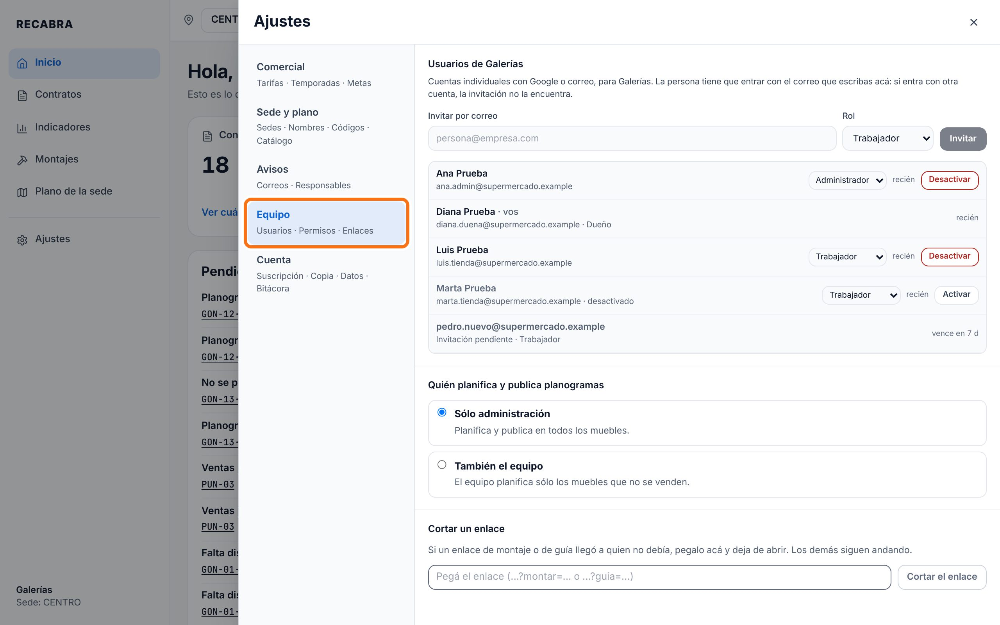
Versión
{{VERSION}} · {{FECHA}}
Sistema
{{APP}}
Equipo
Computador con internet
Tiempo de lectura
30 minutos
Datos de ejemplo
Pantallas de una copia de prueba («Galerías», sede CENTRO). Personas, proveedores y correos inventados.
1Antes de empezar
En RECABRA hay tres roles. El Dueño es un administrador con cuatro cosas más: maneja el equipo completo (también a otros dueños), la suscripción, la copia de seguridad y los datos del supermercado. Arriba a la derecha, al lado de tu nombre, dice tu rol: Dueño.
Quién puede qué
Qué
Trabajador
Administrador
Dueño
Inicio, Indicadores y Montajes (sin plata)
Sí
Sí
Sí
Contratos, precios, Plano, Ajustes comerciales
No
Sí
Sí
Invitar trabajadores y administradores; cambiarles el rol entre esos dos; activarlos y desactivarlos
No
Sí
Sí
Invitar a otro dueño; dar o quitar el rol Dueño; desactivar o reactivar a un dueño
No
No
Sí
Suscripción: lo que se debe, cuentas de cobro, datos de facturación
No
No
Sí
Copia de seguridad del supermercado
No
No
Sí
Descargar los datos del supermercado; pedir la supresión; reporte de transparencia
No
No
Sí
Ver el motivo de un corte de cuenta y entrar aunque la cuenta esté suspendida
No
No
Sí
Descargar mis datos personales
Sí
Sí
Sí
Todo lo demás
Plano, contratos, montajes, planogramas, tarifas y avisos: manual del Administrador. Vos podés hacer todo eso.
Una cuenta por persona
Cada uno entra con su correo. Nunca compartas tu cuenta: lo que hace queda a tu nombre en la bitácora.
A quién avisar
Lo que es de RECABRA (cobro, supresión, errores) lo atiende RECABRA, por su correo de soporte.
1.1 Entrar a RECABRA
Cuándo: cada vez que vas a usar el sistema.
Abrí la dirección de RECABRA y entrá con Google (si tu correo es de Google) o con tu correo y contraseña. Usá siempre el mismo correo con el que te invitaron o con el que diste de alta el supermercado.
Si sos dueño o miembro de dos supermercados, al entrar RECABRA te pregunta a cuál entrar. Para pasar al otro, abrí el menú de tu cuenta, Cerrar sesión, y entrá de nuevo eligiendo el otro.
Arriba a la derecha está tu cuenta: el círculo con tus iniciales, tu nombre y Dueño. Al tocarlo se abre el menú: el supermercado, Tema claro u oscuro, Descargar mis datos y Cerrar sesión.
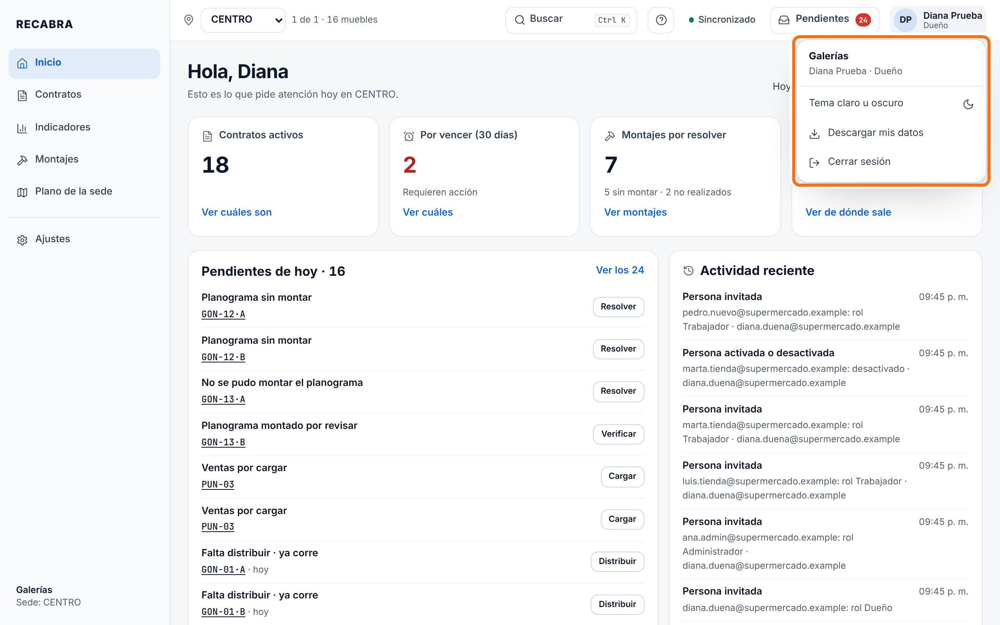
Toda la fila Tema claro u oscuro cambia la pantalla a oscura o clara: tocala en cualquier parte.
Si entrás con otra cuenta
Si entrás con un correo distinto (por ejemplo, el personal en vez del del trabajo), RECABRA no te encuentra en el supermercado. Cerrá la sesión y entrá con el correo correcto. Si RECABRA te ofrece «crear un supermercado» y no es lo que querés, no lo crees: es la señal de que entraste con el correo equivocado.
2El equipo
Desde 2026 en RECABRA no hay claves compartidas: cada persona entra con su propia cuenta, invitada por correo. Desde Ajustes › Equipo ves quién tiene acceso, invitás gente nueva y le cortás el acceso a quien se va.
2.1 Ver el equipo
En el menú de la izquierda tocá Ajustes y después Equipo. En Usuarios de Galerías está cada persona con su correo, la lista de su rol, cuándo entró por última vez (recién, hace 3 d, nunca entró) y su botón Desactivar o Activar. Abajo, las invitaciones que todavía nadie aceptó.
Tu propia fila dice Diana Prueba · vos, con tu rol escrito al lado del correo (diana.duena@supermercado.example · Dueño) y sin botones: nadie se cambia el rol ni se desactiva a sí mismo. Eso lo hace otra persona que maneje el equipo.
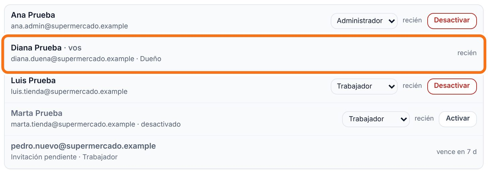
2.2 Invitar a una persona
Cuándo: entra alguien nuevo al equipo. (Si la persona ya está en la lista y necesita otro rol, no la invites: cambiale el rol, 2.3.)
En Invitar por correo escribí el correo de la persona: el mismo con el que va a entrar.
En Rol elegí Trabajador, Administrador o Dueño.
Tocá Invitar.
Listo cuando ves en verde Invitación enviada a sofia.nueva@supermercado.example: entra a Galerías como administrador, con esa misma cuenta. Abajo aparece Invitación pendiente · Administrador con vence en 7 d.
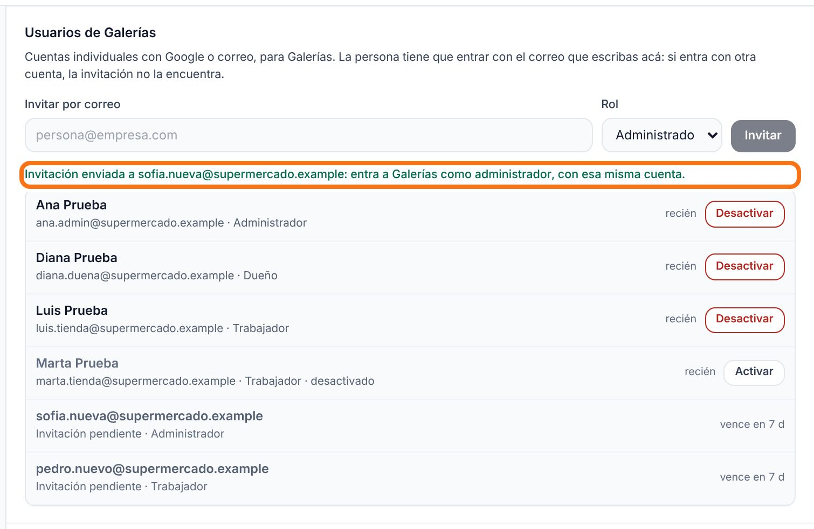
A la persona le llega el correo Invitación a Galerías — RECABRA: el supermercado, el rol, Entrá con y su correo, y el enlace, que vence en 7 días. Entra con Google o creando una cuenta de correo con esa misma dirección. Al entrar, deja de figurar como pendiente y aparece en la lista.
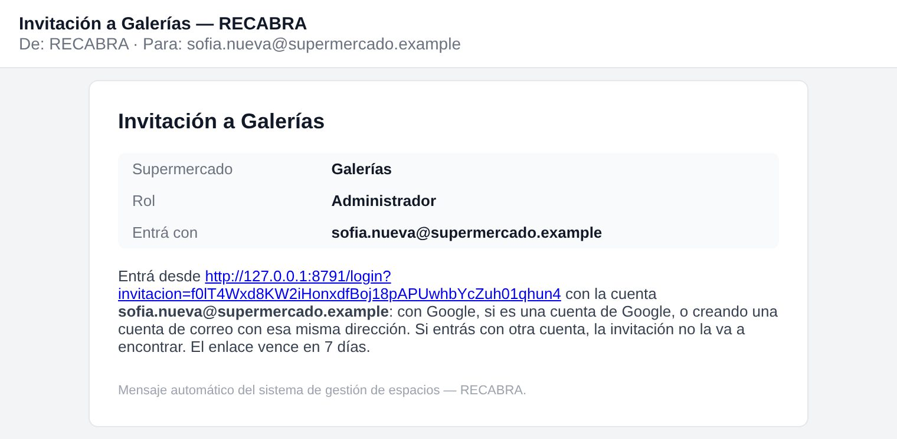
Si el correo no salió
A veces la invitación queda creada pero el correo no sale en ese momento. Entonces el aviso sale en rojo: Invitación creada para carla.prueba@supermercado.example, pero el correo no salió todavía: RECABRA lo vuelve a intentar solo. Si mientras tanto entra a Galerías con esa misma cuenta, ya queda como trabajador. No la invites de nuevo: la invitación ya figura como pendiente. Si es urgente, avisale a la persona que entre a RECABRA con ese correo.
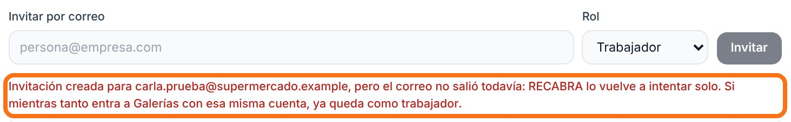
Rol
Para quién
Qué ve y qué hace
Trabajador
Gente de la tienda: mercaderistas, jefes de piso.
Inicio, Indicadores y Montajes, sin plata. Reporta y verifica montajes. Con permiso, planifica las góndolas de la casa.
Administrador
Quien maneja los espacios comerciales.
Todo lo comercial: contratos, precios, plano, planogramas, ajustes. Invita trabajadores y administradores.
Dueño
Quien responde por la cuenta (vos, un socio).
Lo del administrador más equipo completo, suscripción, copia y datos. Sólo un dueño invita a otro dueño.
Si te equivocás
Correo mal escrito: la invitación nunca se va a usar; vence sola a los 7 días. Invitá de nuevo con el correo bien.
Rol equivocado: si todavía no aceptó, dejá vencer esa invitación e invitala de nuevo con el rol bien. Si ya entró, cambiale el rol desde la lista (2.3).
Invitás a alguien que ya está: sale en rojo Esa persona ya es miembro de este supermercado: cambiale el rol desde la lista. Buscala en la lista: cambiale el rol (2.3) o, si dice desactivado, tocá Activar (2.4).
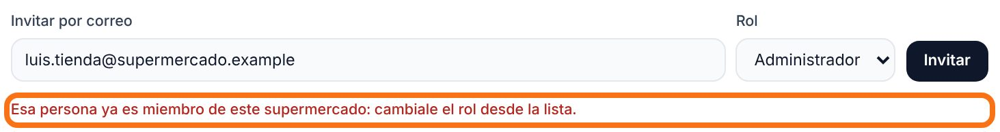
Ojo con el rol Dueño
Un dueño ve la plata de la suscripción, baja la copia con todos los contratos y puede pedir la supresión del supermercado. Dalo sólo a quien responde por la cuenta, nunca a un proveedor ni a personal temporal.
2.3 Cambiar el rol de una persona
Cuándo: alguien cambia de puesto (un trabajador pasa a vender: Administrador), o le diste un rol equivocado. No hace falta invitarla de nuevo.
En Ajustes › Equipo, buscá la fila de la persona y abrí la lista de su rol (dice el rol que tiene hoy, por ejemplo Trabajador).
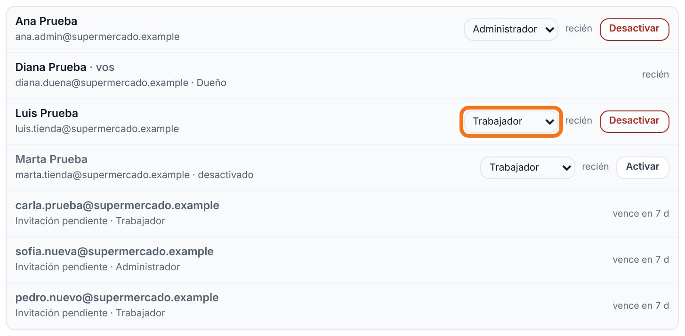
Elegí el rol nuevo: Trabajador, Administrador o Dueño.
El navegador pregunta ¿Pasar a Luis Prueba a administrador? Si tiene la sesión abierta, va a tener que volver a entrar. Tocá Aceptar. (Si tocás Cancelar, no cambia nada.)
Listo cuando la lista de su fila dice el rol nuevo y abajo sale en verde Listo: Luis Prueba ahora es administrador.
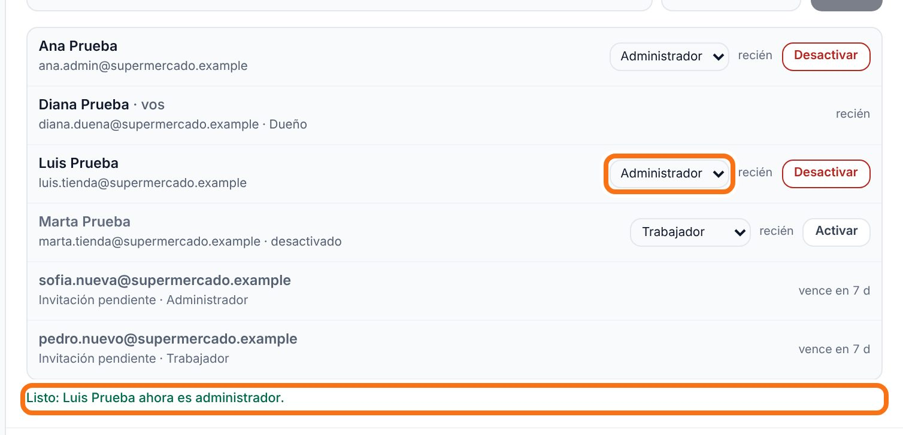
Si la persona tenía RECABRA abierto, su sesión se cierra sola: la próxima vez que toca algo vuelve a la portada. Que toque Ya tengo cuenta y entre como siempre.
Al entrar de nuevo, arriba a la derecha, debajo de su nombre, ya dice su rol nuevo: Administrador.
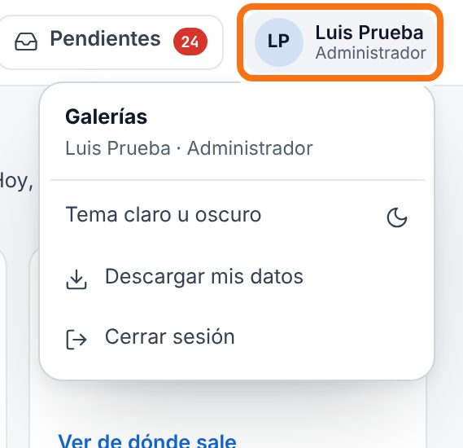
Lo que no se puede
Cambiarte el rol a vos mismo. Tu fila no tiene la lista. Te lo cambia otra persona.
Dar o quitar el rol Dueño, si no sos dueño. Un administrador sólo ve Trabajador y Administrador, y las filas de los dueños le aparecen sin lista ni botones.
Dejar el supermercado sin dueño. Si querés dejar de ser dueña, primero dale el rol Dueño a otra persona; después, esa persona te cambia el rol a vos.
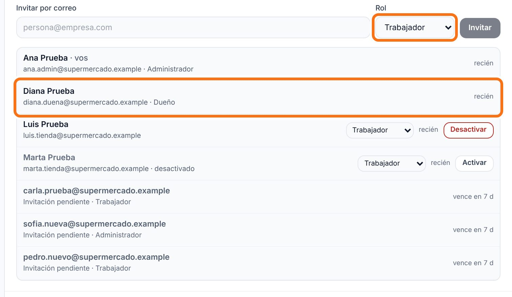
Así ve Equipo Ana, administradora: en Rol no está Dueño, y la fila de Diana (dueña) no tiene lista ni botones.
Al dar el rol Dueño
El navegador avisa: ¿Darle el rol Dueño a Ana Prueba? Va a poder ver la suscripción, bajar la copia de seguridad, manejar a los otros dueños y pedir la supresión del supermercado. Si no estás segura, tocá Cancelar: la fila queda como estaba. Si elegiste un rol por error y aceptaste, volvé a elegir el de antes: sale Listo: Luis Prueba ahora es trabajador.
Cuándo cierra la sesión
Entre Trabajador y Administrador la persona vuelve a entrar, porque cambia lo que ve (la plata). Entre Administrador y Dueño, no: sigue adentro y lo del dueño se le abre o se le cierra solo. Todo cambio de rol queda en la bitácora (3.5), con a quién se le cambió y quién lo hizo.
2.4 Desactivar a quien se va (y volver a activar)
Cuándo: el mismo día que una persona deja el supermercado. (Si sólo cambió de puesto, cambiale el rol: 2.3.)
En la fila de la persona tocá Desactivar.
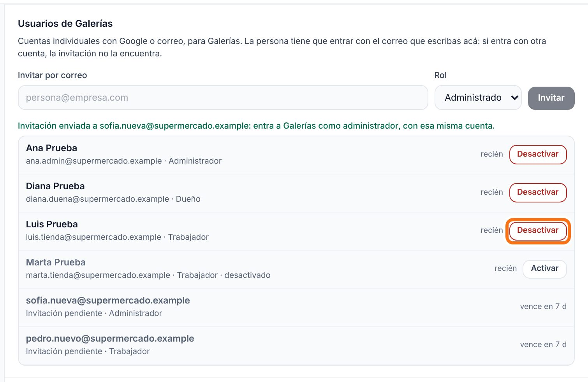
El navegador pregunta ¿Desactivar a Luis Prueba? Pierde el acceso a este supermercado de inmediato. Tocá Aceptar.
Listo cuando la fila dice desactivado, en gris, y el botón cambia a Activar. Si fue un error, tocá Activar: vuelve con el mismo rol, sin invitarla de nuevo.
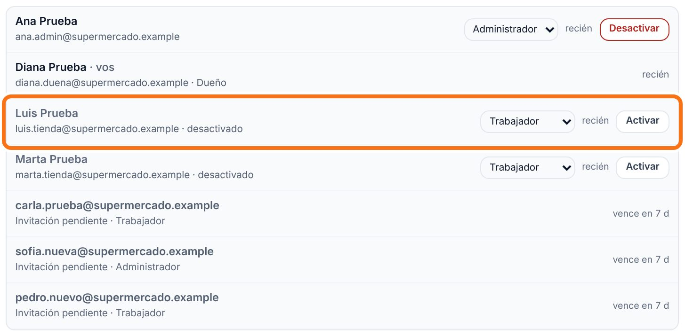
Lo que pasa al desactivar
Pierde el acceso enseguida, aunque esté con la sesión abierta.
Lo que hizo queda: sus contratos, montajes y su línea en la bitácora no se borran.
Un administrador no puede desactivar a un dueño; sólo otro dueño. Vos no podés desactivarte (tu fila no tiene botón), y el supermercado no se puede quedar sin un dueño activo.
Los enlaces de montaje que esa persona reenvió siguen andando: si hace falta, cortalos (2.6).
2.5 Invitaciones pendientes
Cada invitación dura 7 días (vence en 7 d). Mientras está pendiente, la persona no tiene acceso. Si venció, desaparece de la lista: invitá de nuevo. Si la persona dice que «no la encuentra», casi siempre entró con otro correo: pedile que cierre la sesión y entre con el correo exacto de la invitación.
2.6 Permisos de planogramas y cortar un enlace
Quién planifica y publica planogramas: con Sólo administración (lo normal) nadie del equipo toca los planogramas; con También el equipo, los trabajadores planifican y publican sólo los muebles que no se venden (las góndolas de la casa). Se guarda al tocar.
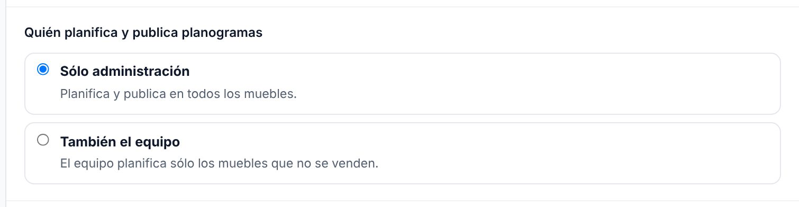
Cortar un enlace: los enlaces de montaje y de guía abren sin contraseña. Si uno llegó a quien no debía (un proveedor de la competencia, un grupo de WhatsApp equivocado), pegalo en el campo y tocá Cortar el enlace. Deja de abrir; los demás siguen andando.
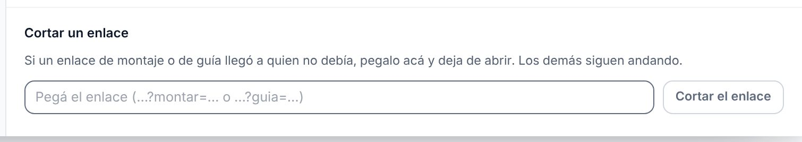
3La cuenta
Ajustes › Cuenta es lo tuyo como dueño: lo que RECABRA le cobra al supermercado, la copia de seguridad, los datos y la bitácora. Un administrador que no es dueño no ve la suscripción ni la copia, y en Tus datos sólo le dice dónde bajar sus datos personales.
En Ajustes tocá Cuenta. De arriba a abajo: Suscripción, Copia de seguridad, Tus datos y Bitácora.
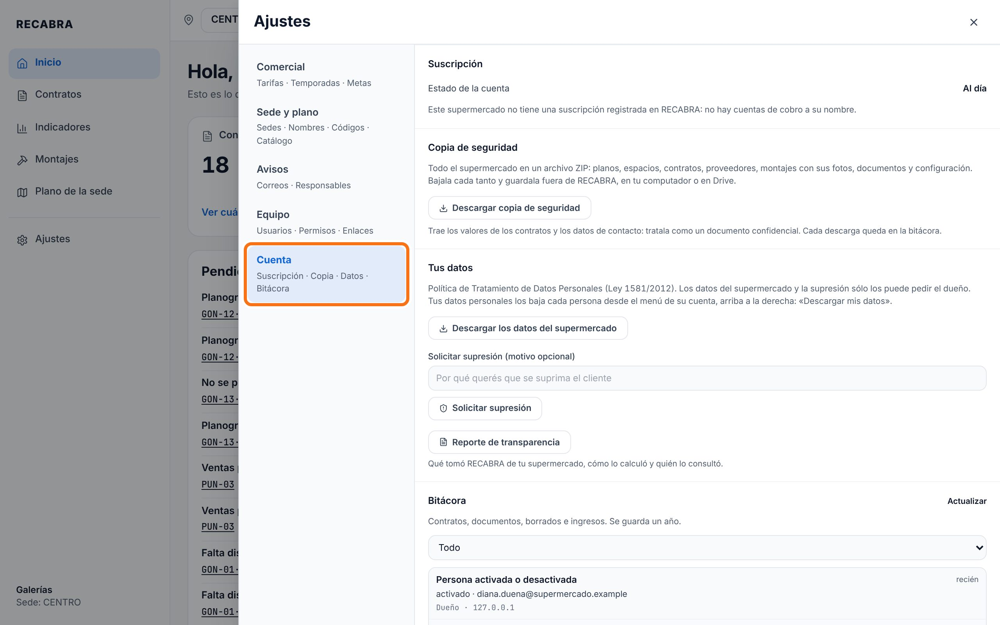
3.1 Suscripción y facturación
Cuándo: cuando llega una cuenta de cobro, o si aparece arriba la franja Pago pendiente.
En Suscripción ves el Estado de la cuenta (con el motivo), Lo pactado (por mes), el Plazo para pagar, la Próxima a pagar con Total, Retenciones estimadas, Neto a pagar y cuándo vence, Cómo pagar, las Cuentas de cobro y los Cambios de estado. En el ejemplo: $ 450.000 al mes, neto $ 427.653.
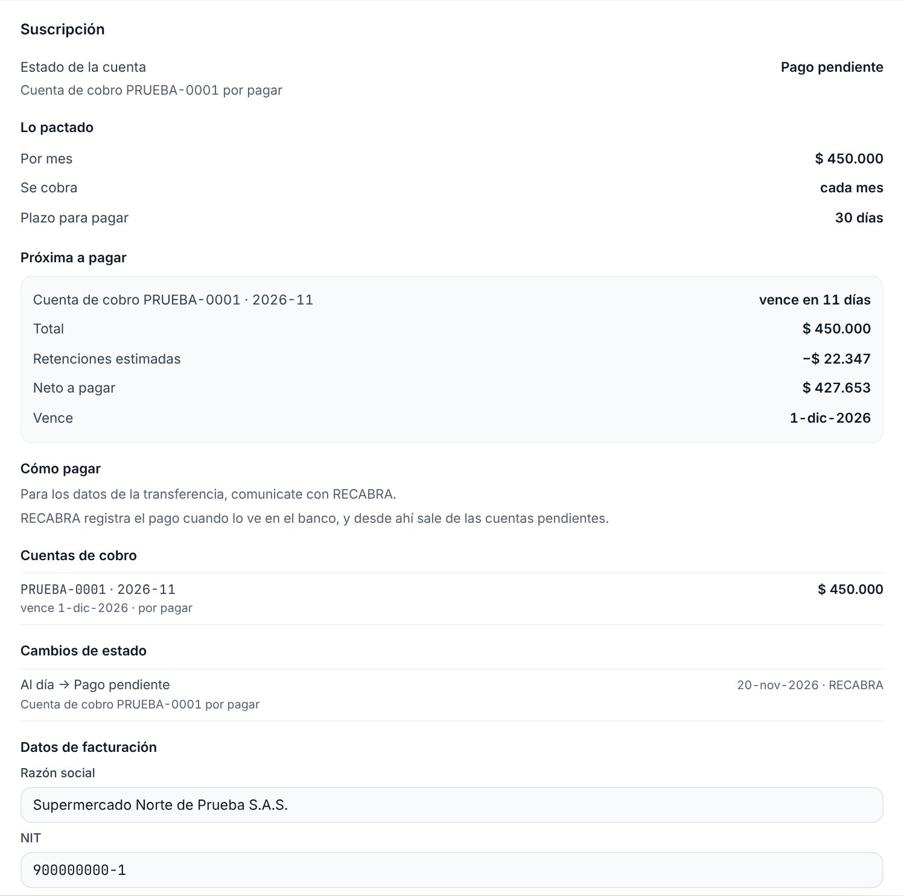
Más abajo, Datos de facturación: razón social, NIT, correo de facturación y municipio. Si cambian, corregilos y tocá Guardar datos de facturación: valen para las próximas cuentas de cobro.
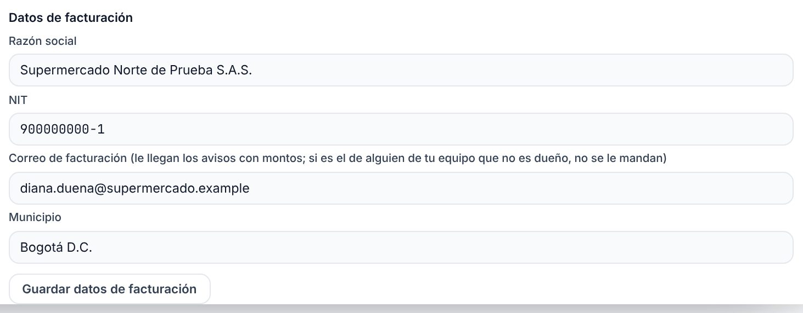
El pago es por transferencia: los datos te los da RECABRA (Para los datos de la transferencia, comunicate con RECABRA.). RECABRA registra el pago cuando lo ve en el banco. RECABRA no pide tarjeta ni usa pasarela de pago: desconfiá de cualquier correo que te pida datos de tarjeta.
Estado
Qué pasa
Qué ve tu equipo
Al día
Todo normal.
Nada.
Pago pendiente
Hay una cuenta de cobro vencida. Todo sigue andando. Llegan avisos por correo.
La franja Pago pendiente, sin montos ni motivo.
Sólo lectura
A los 30 días de vencida (y nunca antes de 10 días del aviso formal por correo): se puede mirar, no cambiar nada.
La franja; no pueden guardar.
Suspendida
Lo decide RECABRA, a mano. Sólo el dueño entra, para ver el motivo y ponerse al día.
No pueden entrar.
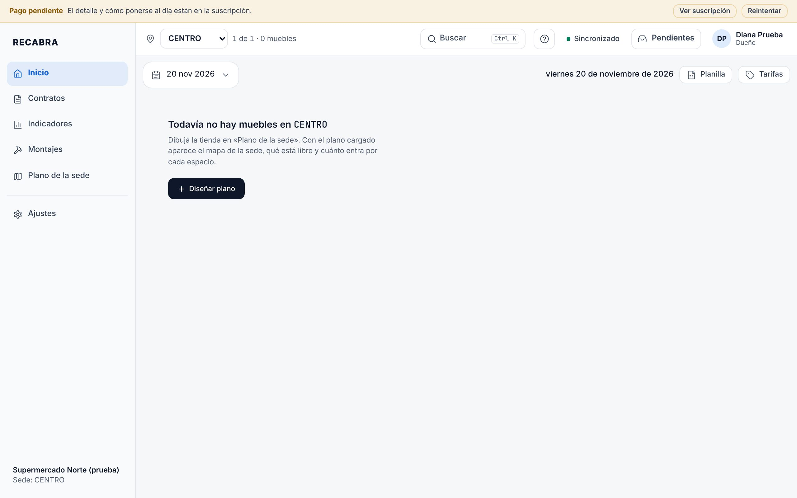
La franja Pago pendiente, arriba de todo: Ver suscripción abre la suscripción (sólo la ve el dueño) y Reintentar vuelve a consultar el estado, por ejemplo después de que RECABRA registró el pago. El supermercado del ejemplo («Norte») todavía no tiene plano.
Sin suscripción
Si dice Este supermercado no tiene una suscripción registrada en RECABRA: no hay cuentas de cobro a su nombre., no hay nada que pagar en el sistema (por ejemplo, un acuerdo aparte).
3.2 Copia de seguridad
Cuándo: una vez al mes, y antes de cambios grandes (renumerar, borrar una sede).
En Copia de seguridad, tocá Descargar copia de seguridad. Mientras se arma dice Armando la copia… y el porcentaje. Listo cuando dice Listo: recabra-copia-galerias-….zip (1,6 MB). El archivo queda en la carpeta de descargas.
Es confidencial
El ZIP trae todo: planos, espacios, contratos con sus valores, proveedores con sus contactos, montajes con fotos, documentos y configuración. Guardalo fuera de RECABRA (tu computador o tu Drive), no lo mandes por correo ni lo dejes en un computador compartido. Cada descarga queda en la bitácora.
3.3 Tus datos: los del supermercado, la supresión y los tuyos
Cuándo: cuando lo pida un auditor o el área legal, o si el supermercado deja de usar RECABRA.
En Tus datos: Descargar los datos del supermercado (1) baja un archivo con los espacios, contratos, proveedores y planos (dice Descarga iniciada.). Solicitar supresión (2), con un motivo opcional (el campo dice Por qué querés que se borren los datos del supermercado), pide que se borren los datos del supermercado. Reporte de transparencia (3), en 3.4.
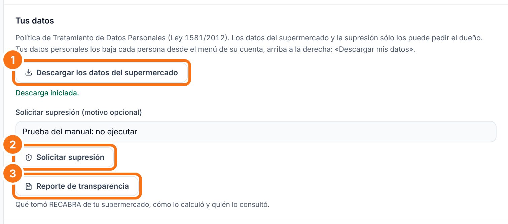
Al tocar Solicitar supresión, el navegador avisa: Esto NO borra nada ahora mismo: registra un pedido de supresión de los datos del supermercado que revisa una persona de RECABRA, y, si corresponde, la supresión se hace a mano. ¿Confirmás la solicitud? Al aceptar dice Solicitud registrada. Una persona de RECABRA la va a revisar. Si ya había una pedida, dice Ya hay una solicitud de supresión pendiente para este supermercado: RECABRA la está revisando.: no hace falta pedirla de nuevo.
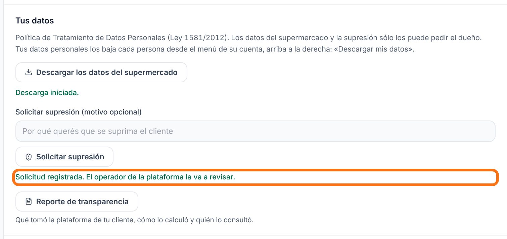
La supresión es seria
Pedirla no borra nada en el momento, pero si RECABRA la ejecuta, se borra el supermercado y no hay vuelta atrás. Antes, bajá la copia de seguridad (3.2). Si la pediste por error, escribile enseguida a RECABRA.
Tus datos personales (tu cuenta, las políticas que aceptaste y lo que te menciona) los baja cada persona —también vos— desde el menú de su cuenta, arriba a la derecha: Descargar mis datos (1.1). Se pueden bajar hasta 3 veces por hora.
Así ve Tus datos alguien de tu equipo que no es dueño (por ejemplo, Ana, administradora): sin botones, sólo Tus datos personales los bajás vos, desde el menú de tu cuenta, arriba a la derecha: «Descargar mis datos». Los datos del supermercado, la solicitud de supresión y el reporte de transparencia son del dueño de la cuenta: si los necesitás, pedíselos. Si te los pide, los bajás vos.
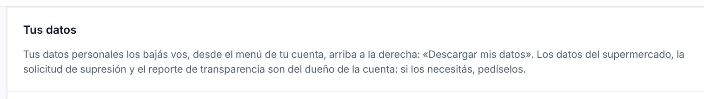
3.4 Reporte de transparencia
Cuándo: para saber qué toma RECABRA de tu supermercado, para qué, y quién de RECABRA lo miró.
En Tus datos, tocá Reporte de transparencia.
Arriba elegí la Ventana (3, 6, 12 o 24 meses). Imprimir / Guardar como PDF lo saca en papel; Volver regresa. El reporte tiene cuatro partes:
1. Qué datos toma RECABRA y para qué: los datos agrupados por para qué se usan (Salud de la cartera, Asesoría comercial y Cobranza y administración de la cuenta). Cada uno dice su nombre y qué es (por ejemplo Ocupación. Porcentaje de espacios comercializables con un contrato activo en el período (ocupadas ÷ comercializables × 100).) y, debajo, De dónde sale: y Cómo: (De dónde sale: los planos de las sedes, los contratos. Cómo: sale calculado a partir de otros datos.).
2. Valores tomados, mes a mes: lo que RECABRA guardó de cada mes. sin captura quiere decir que ese mes no se guardó nada, no que hubo cero contratos.
3. Quién lo consultó: los accesos de RECABRA a los datos de tu supermercado, con la fecha, Quién (el correo de la persona de RECABRA), qué hizo y el período.
4. Tus derechos: dónde se hace cada cosa (paso 5).
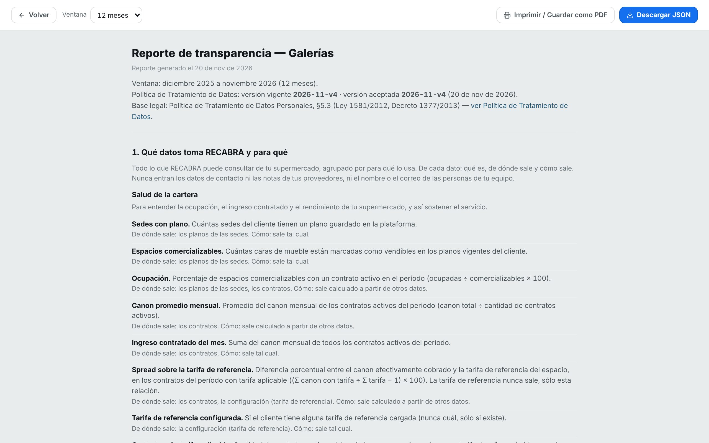
Debajo del título están las fechas, en días de Colombia: cuándo se generó (Reporte generado el 20 de nov de 2026) y qué versión de la política está vigente y cuál aceptaste y cuándo (versión vigente 2026-11-v4 · versión aceptada 2026-11-v4 (20 de nov de 2026)).
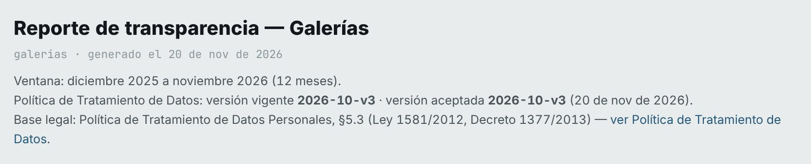
En 3. Quién lo consultó, cada fila es un acceso de RECABRA. En el ejemplo hay uno: 20 de nov de 2026, operador@recabra.example, Listado de clientes. Nunca dice qué miró exactamente.
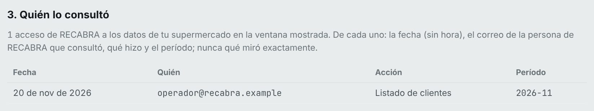
Al final, 4. Tus derechos dice dónde se hace cada cosa en la pantalla: bajar los datos, pedir la supresión y volver a ver el reporte (los tres en Ajustes › Cuenta › Tus datos, sólo el dueño), y a quién escribir para cualquier otra consulta.
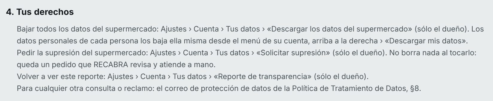
Si algo no te cierra
Si en «Quién lo consultó» ves un acceso que no esperabas, escribile a RECABRA al correo de protección de datos de la política.
3.5 La bitácora
Cuándo: cuando hay que saber quién hizo algo («¿quién canceló este contrato?», «¿quién invitó a esta persona?»).
Al final de Cuenta está la Bitácora: contratos, documentos, borrados e ingresos, guardados un año. Cada línea dice qué pasó, el detalle completo con el correo de quien lo hizo al final, el rol (Dueño, Administrador, Trabajador), desde qué conexión y cuándo.
En la lista de arriba elegí un tipo para ver sólo eso. Por ejemplo Rol de una persona cambiado: cada línea dice a quién, el cambio y quién lo hizo (luis.tienda@supermercado.example: Trabajador → Administrador · diana.duena@supermercado.example). Actualizar la vuelve a leer.
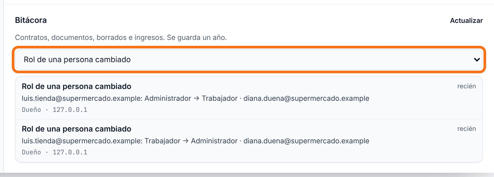
Igual en Persona activada o desactivada (luis.tienda@supermercado.example: desactivado · diana.duena@supermercado.example) y en Persona invitada (sofia.nueva@supermercado.example: rol Administrador · diana.duena@supermercado.example). Lo borrado se ve en rojo y los ingresos fallidos en ámbar. La bitácora no se puede editar ni borrar.
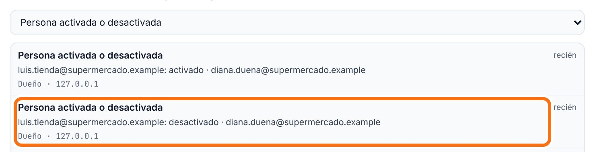
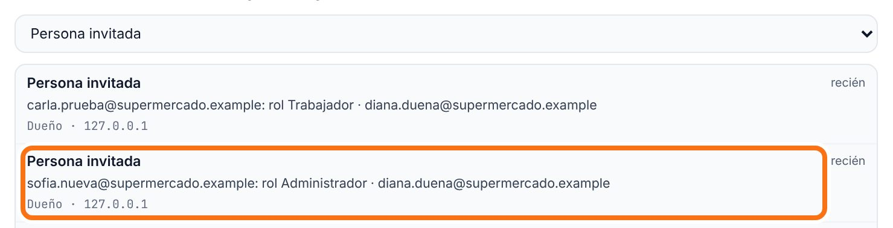
4Las sedes
Cada tienda es una sede, con su plano, sus contratos y sus responsables. Crear una sede es fácil; borrarla se lleva su plano y cierra sus contratos, así que se piensa dos veces. Esto también lo puede hacer un administrador; acá va lo que conviene que el dueño sepa.
4.1 Crear una sede
En Ajustes › Sede y plano, escribí el nombre en Nombre de la sede nueva (por ejemplo, NORTE) y tocá Agregar sede.
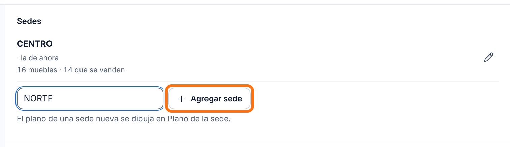
La sede aparece en la lista con 0 muebles. Ahora hay que dibujar su plano (manual del Administrador, Plano de la sede) y cargar sus responsables en Ajustes › Avisos.
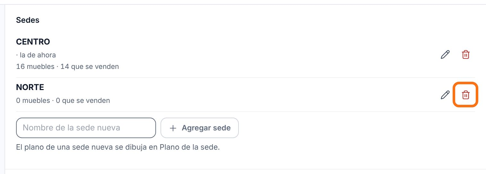
Cambiar el nombre
El lápiz renombra la sede. Antes de guardar, RECABRA dice adónde van los contratos y las reservas; si algo lo impide, lo explica y no cambia nada.
4.2 Eliminar una sede y restaurarla
Cuándo: la tienda cerró, o se creó una sede por error.
Tocá el tacho rojo de la sede. Se abre Eliminar la sede «NORTE»: cuántos muebles y contratos tiene, que Se borra el plano completo de esta sede en todos los computadores y que El tablero pierde los ingresos, la ocupación y los vencimientos de esta sede. Escribí el nombre de la sede y tocá Eliminar sede.
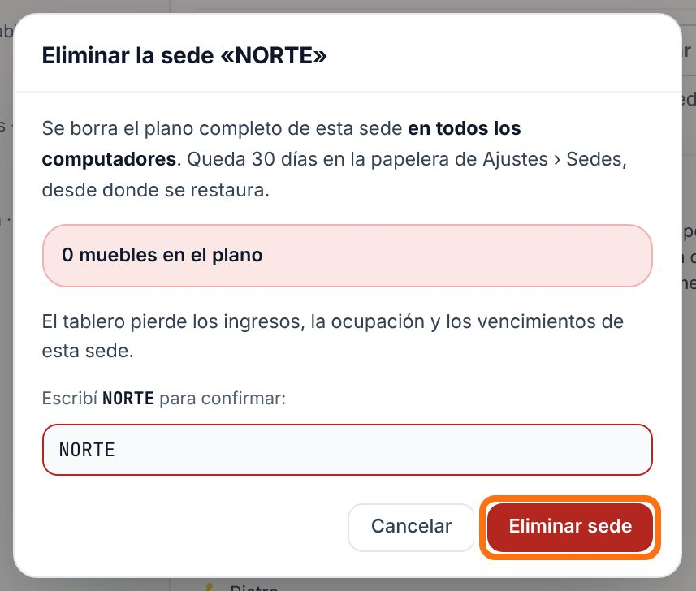
La sede pasa a la Papelera: Borrada el 20 nov · se puede restaurar hasta el 20 dic. Si fue un error, tocá Restaurar: vuelven su plano, sus códigos y los contratos que siguen en fecha.
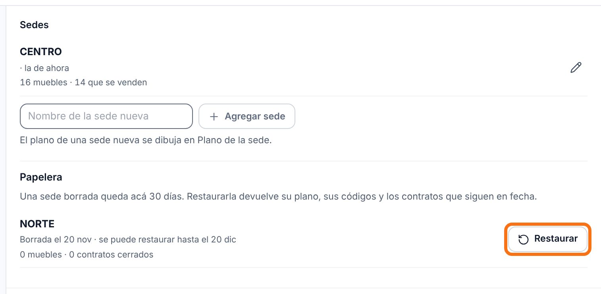
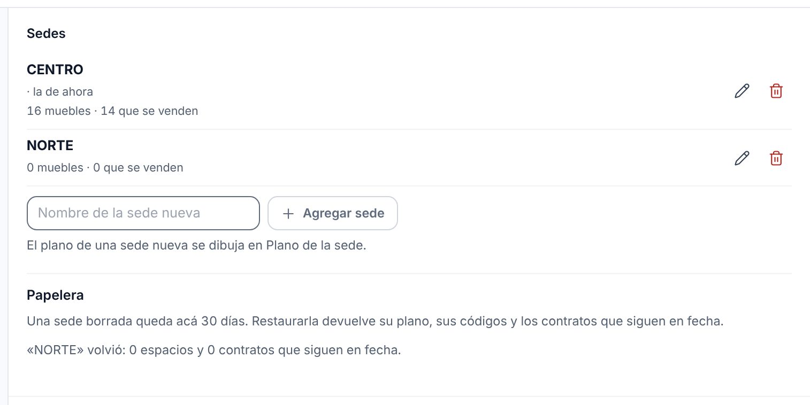
No se puede deshacer después de 30 días
Pasados los 30 días de la papelera, la sede no vuelve.
Los contratos se cierran y quedan archivados (con su valor y sus fechas), pero dejan de avisar.
Las reservas provisionales se cancelan y no vuelven al restaurar.
La última sede del supermercado no se puede eliminar.
5Seguridad y problemas frecuentes
Cinco reglas que protegen la plata del supermercado y los datos de los proveedores, y qué hacer con lo que más pasa.
5.1 Seguridad
Una cuenta por persona, nunca compartida. Si alguien necesita entrar, invitalo con su correo. Lo que se hace con tu cuenta queda a tu nombre en la bitácora.
Desactivá a quien se va el mismo día (2.4); si sólo cambió de puesto, cambiale el rol (2.3). Revisá la lista de Equipo una vez al mes: nadie que ya no trabaje con ustedes debería estar activo.
El rol más chico que alcance. Para montar y verificar, Trabajador; para vender, Administrador. Dueño, sólo quien responde por la cuenta. Tené al menos dos dueños activos, para que la cuenta no dependa de una sola persona.
Cuidá lo que sale del sistema: la copia de seguridad y la descarga de datos llevan precios y contactos. Los enlaces de montaje y de guía abren sin contraseña: si uno se filtra, cortalo (2.6).
Desconfiá de pedidos raros: RECABRA no pide tu contraseña ni datos de tarjeta por correo. Las cuentas de cobro se ven en Ajustes › Cuenta › Suscripción.
Si perdiste el acceso o te robaron la cuenta
Pedile a otro dueño que te desactive y te vuelva a invitar, cambiá la contraseña de tu correo y escribile a RECABRA. Si sos la única dueña, escribile a RECABRA directamente.
5.2 Problemas frecuentes
Lo que pasa
Qué hacer
La persona invitada dice que «no tiene acceso» o que RECABRA le ofrece crear un supermercado.
Entró con otro correo. Que cierre la sesión y entre con el correo exacto de la invitación. Que no cree un supermercado.
No le llegó la invitación.
Que revise el correo no deseado. Si venció (7 días), invitá de nuevo.
Al invitar sale en rojo Invitación creada para …, pero el correo no salió todavía: RECABRA lo vuelve a intentar solo.
La invitación ya existe (figura como pendiente): no la repitas. RECABRA reintenta el correo solo. Si es urgente, avisale a la persona que entre a RECABRA con ese mismo correo: entra con el rol que elegiste (2.2).
No aparece la opción Dueño en el rol.
Sólo un dueño da el rol Dueño. Revisá que entraste con tu cuenta (arriba, debajo de tu nombre, debe decir Dueño).
Tu fila (vos) no tiene botones.
Es a propósito: nadie se cambia el rol ni se desactiva a sí mismo. Pedíselo a otro dueño.
Un trabajador pasó a administrador y dice que «lo sacó del sistema».
Es lo normal al cambiar entre esos dos roles: que toque Ya tengo cuenta y entre de nuevo. Ya entra con el rol nuevo.
Esa persona ya es miembro de este supermercado: cambiale el rol desde la lista.
No la invites: cambiale el rol en su fila (2.3) o, si está desactivada, Activar.
Sale Esto lo puede hacer sólo el dueño del supermercado, con su cuenta.
Entraste con una cuenta que no es dueña, o con una sesión vieja. Cerrá la sesión y entrá con tu cuenta de dueño.
Arriba aparece Pago pendiente.
Ajustes › Cuenta › Suscripción: mirá qué cuenta de cobro está vencida y pedile a RECABRA los datos para transferir.
Nadie del equipo puede guardar cambios.
Probablemente la cuenta está en sólo lectura por falta de pago: mirá Suscripción.
La copia de seguridad no termina.
Esperá; con muchas fotos tarda. Si dice que no se pudo, probá en un rato. Se pueden bajar varias veces.
Borré una sede sin querer.
Ajustes › Sede y plano › Papelera › Restaurar, dentro de los 30 días.
Un enlace de montaje llegó a un grupo equivocado.
Ajustes › Equipo › Cortar un enlace y mandá uno nuevo a quien monta.
Tengo dos supermercados y quiero pasar al otro.
Menú de la cuenta › Cerrar sesión y entrá de nuevo eligiendo el otro.
6Palabras que vas a ver
Palabra
Qué quiere decir
Dueño
Quien responde por la cuenta del supermercado en RECABRA. Es administrador y además maneja equipo, suscripción, copia y datos.
Administrador
Quien maneja lo comercial: contratos, precios, plano, planogramas y ajustes.
Trabajador
Gente de la tienda: ve Inicio, Indicadores y Montajes, sin plata.
Invitación pendiente
Una invitación que la persona todavía no aceptó. Vence a los 7 días.
Desactivar
Cortarle el acceso a una persona. Se puede volver a activar.
Cambiar el rol
Pasar a una persona de Trabajador a Administrador (o al revés, o a Dueño) desde su fila en Equipo, sin invitarla de nuevo.
vos
La marca de tu propia fila en Equipo: no tiene botones.
Sede
Cada tienda, con su plano y sus contratos.
Papelera
Donde quedan 30 días las sedes borradas, para restaurarlas.
Suscripción
Lo que RECABRA le cobra al supermercado: lo pactado, las cuentas de cobro y los pagos.
Cuenta de cobro
El documento de cada mes, con total, retenciones y neto a pagar.
Retenciones
Lo que el supermercado descuenta por ley al pagar (retefuente, reteICA). El neto es lo que se transfiere.
Pago pendiente · Sólo lectura · Suspendida
Los estados de la cuenta cuando hay una cuenta de cobro vencida (3.1).
Copia de seguridad
Un ZIP con todo el supermercado, para guardar fuera de RECABRA.
Supresión
El pedido de borrar el supermercado (Ley 1581 de 2012). Lo revisa y ejecuta RECABRA a mano.
Reporte de transparencia
Qué datos toma RECABRA del supermercado, cómo los calcula y quién los consultó.
Bitácora
El registro de quién hizo qué y cuándo. Se guarda un año.
Enlace de montaje / de guía
El enlace sin contraseña que recibe quien monta. Se puede cortar.